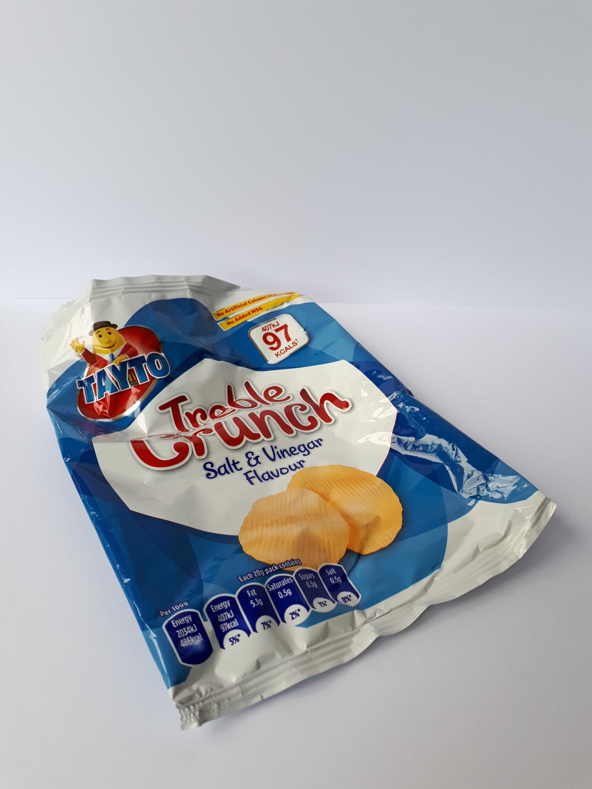

Rigid Plastics

Sweet and biscuit wrappers are soft plastic and therefore cannot be recycled in your domestic recycling bin. Generally, these wrappers are made of a mix of materials and it is too difficult to separate and recycle them.

Crisp packets are made of plastic on the outside and foil on the inside. It is difficult, and therefore not economically viable, to separate these materials and so crisp packets cannot be recycled in your domestic recycling bin.
However, check if the Terracycle Crisp Packet Recycling Scheme is available in your area.